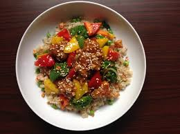

Home
Veggie Rice

Description
Veggie rice is a healthy, flavorful dish made with rice and a variety of vegetables. It is often seasoned with herbs and spices, and can be served as a side dish or as a main course. The dish is versatile and can be customized with different vegetables and seasonings to suit individual tastes.
Ingredients
- Basmati Rice
- Vegetables (e.g., carrots, peas, bell peppers)
- Onions
- Garlic
- Olive Oil
- Salt and Pepper
Instructions
- Heat olive oil in a large pan over medium heat.
- Add onions and garlic, sauté until fragrant.
- Add vegetables and cook until tender.
- Stir in rice and season with salt and pepper.
- Cook for 10-15 minutes, stirring occasionally, until rice is heated through and vegetables are well combined.